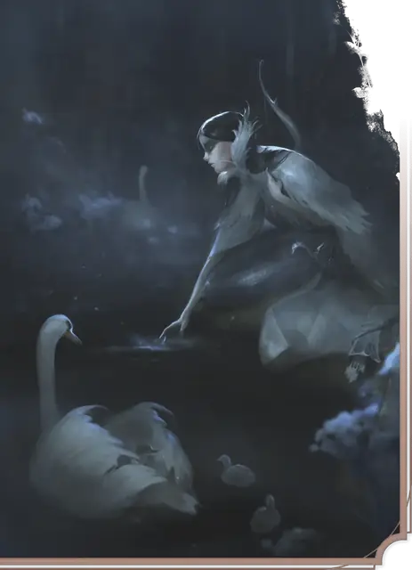

Лебединая дева
Swanmay
Средняя Фея, Нейтральная Добрая

Класс Защиты 14 Инициатива +4 (14)
Хиты 71 (11к8 + 22)
Скорость 30 футов, Полёта 40 футов (только в форме лебедя)
| мод | спас | ||
|---|---|---|---|
| СИЛ | 10 | +0 | +0 |
| ЛОВ | 18 | +4 | +4 |
| ТЕЛ | 14 | +2 | +4 |
| мод | спас | ||
|---|---|---|---|
| ИНТ | 10 | +0 | +0 |
| МДР | 16 | +3 | +5 |
| ХАР | 15 | +2 | +2 |
Чувства пассивное Восприятие 15
Языки Общий, Сильван
Опасность 3 (700 опыта; БВ +2)
Особенности
Облёт (только в форме лебедя). Лебединая дева не Провоцирует атак, когда вылетает из вражеской досягаемости.
Действия
Мультиатака. Лебединая дева совершает две атаки Клювом, Скимитаром или Длинным луком в любой комбинации.
Клюв (только в форме лебедя). Бросок рукопашной атаки: +6, досягаемость 5 фт. Попадание: 7 (1к6 + 4) Колющего урона. Если цель — существо Большого размер или меньше, она становится Опрокинутой.
Скимитар (только в гуманоидной форме). Бросок рукопашной атаки: +6, досягаемость 5 фт. Попадание: 11 (2к6 + 4) Рубящего урона.
Длинный лук (только в гуманоидной форме). Бросок дальнобойной атаки: +6, дистанция 150/600 фт. Попадание: 13 (2к8 + 4) Колющего урона.
Сотворение заклинаний. Лебединая дева сотворяет одно из следующих заклинаний, не нуждаясь в Соматических и Материальных компонентах (заклинательная характеристика — Мудрость, Сл спасброска заклинаний 13):
Неограниченно: Искусство друидов, Разговор с животными
1/день каждое: Дружба с животными, Животные чувства, Поросль шипов
Бонусные действия
Перевоплощение. Лебединая дева либо перевоплощается в лебедя Маленького размера, либо возвращается в истинную гуманоидную форму. Её статистика не меняется в зависимости от формы, если не указано обратного. Снаряжение, которое он носит или несёт, не трансформируется.
Бонус мастерства +2
Среда обитания Леса
Сокровища Личные
Лебединая дева
Перевоплощающаяся защитница природы
Лебединые девы — участницы тайного ордена защитников диких земель. Каждая носит в себе первозданное благословение, позволяющее ей обращаться лебедем и хранить покой озёр и лесов, которые она зовёт домом. Лебединые девы легко находят общий язык с дриадами и другими созданиями, что посвятили себя защите нетронутой природы.
Совершите бросок по таблице «Заповедник лебединой девы» для вдохновения или определите сами, что именно защищает лебединая дева.
Заповедник лебединой девы
| к6 | Лебединая дева посвятила себя защите… |
| 1 | Потаённого родника. |
| 2 | Берега озера, опустошённого лесным пожаром. |
| 3 | Места слияния трёх рек. |
| 4 | Дриады, чьё дерево исцеляется от недуга. |
| 5 | Гуманоида, не знающего об истинной природе девы. |
| 6 | Горсти семян, хранящих первозданную силу. |